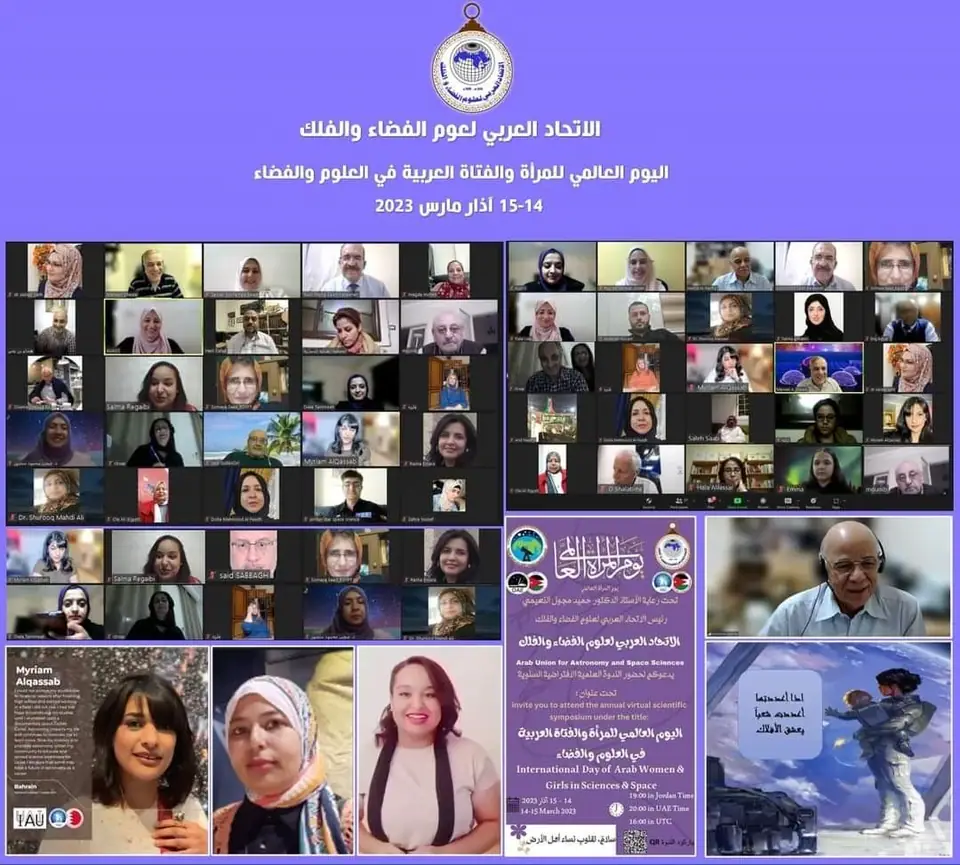
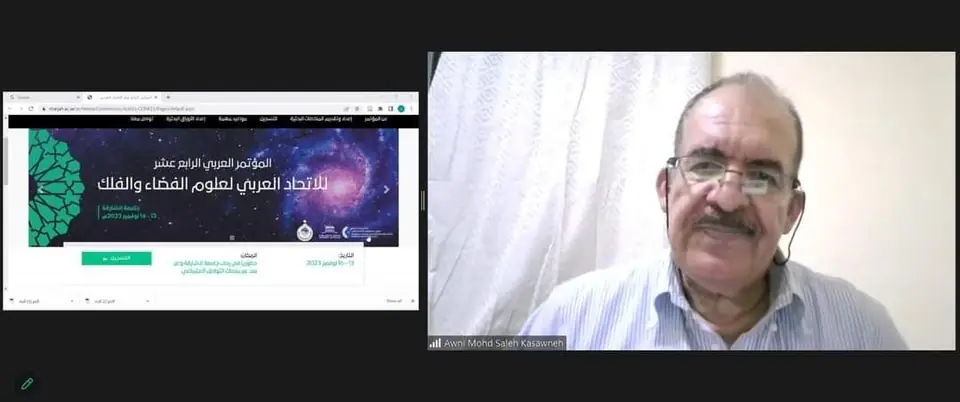
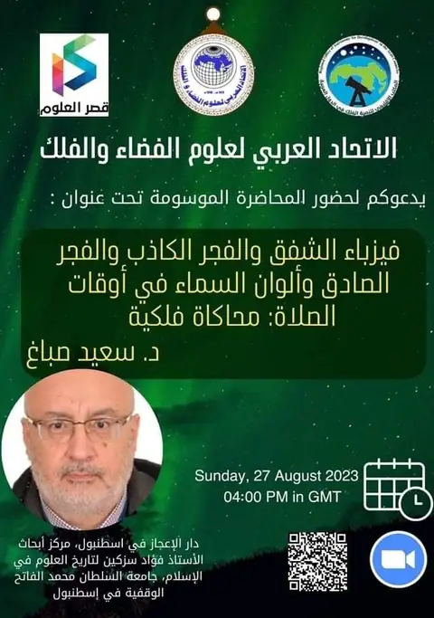
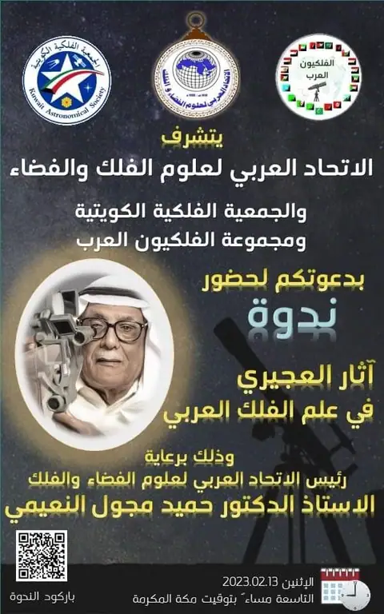
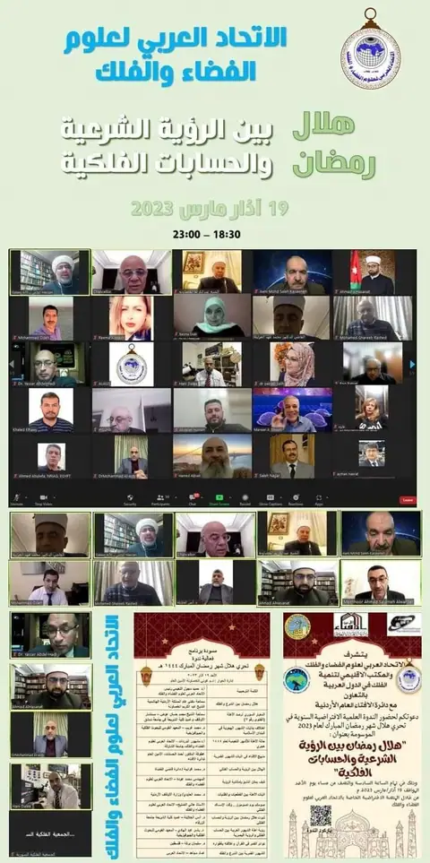

Lectures and events ·
Symposium for the International Day of Arab Women and Girls in Science and Space
Translated from the Arabic original. اقرأ النص الأصلي بالعربية


The symposium was held on 14–15 March 2023 under the patronage of
Prof. Hamid Majool Al-Naimiy, President of the Arab Union for Astronomy and Space Sciences, the International Astronomical Union and the Office of Astronomy for Development.
The event opened with a welcome speech full of pride by the President of the Arab Union for Astronomy and Space Sciences, Prof. Hamid Majool Al-Naimiy, who spoke of the important role of women and girls in the advancement of nations and of his pride that Arab women and girls are excelling at every level, and congratulated the participants and audience on their international day.
The Union's Secretary General, Dr. Eng. Awni Khasawneh, spoke about the role of all the participants in space and astronomy science and the Union's continued support for all women, women astronomers and rising young women.
The meeting was attended by a representative of the International Astronomical Union, Mr. José M. Rodríguez Espinosa, who spoke about the importance of such activities and thanked the organisers.
The first contribution was by Prof. Somaya Saad of Egypt, who works at the National Research Institute of Astronomy and Geophysics – Helwan Observatory. In her talk, "Astronomy and milestones on its way to exploring the universe", she stressed the importance of working and striving for progress.
She was followed by Dr. Magda Moheb of Egypt with a talk on the achievements and challenges of women astronomers through the ages.
Ms. Dalal Allala, an astronomy trainer from Jordan, spoke about the role of the Arab Union for Astronomy and Space Sciences in spreading astronomical knowledge and culture.
Dr. Hala Al-Jassar of Kuwait, member of the AUASS High Council, spoke about KuwaitSat-1 as an example of capacity building in space science and technology.
Researcher Fatima Al-Khatri of the UAE spoke about the spectral classification of selected stellar X-ray sources in the Small Magellanic Cloud, telling the story of her master's thesis at the University of Sharjah.
Eng. Sham Sheikh Jabr of the Syrian Astronomical Society, Syria, presented on astronomical gears.
Prof. Hadia Hassan of Egypt explained the role of women in spreading scientific culture through various scientific societies.
Ms. Nour Al-Alayah, an educational supervisor at Jordan's Ministry of Education, spoke on astronomy between reality and ambition.
The first day ended with a talk by second-year engineering student Raghad Marqa of Jordan on how a mechanical engineering student in Jordan can enter the world of space technology.
At the close of the first day of the online symposium, Prof. Hamid Majool Al-Naimiy and Dr. Eng. Awni Khasawneh expressed their pride in creative Arab women who shine in every field.
At the start of the second day, everyone expressed their pleasure in this enjoyable meeting, full of knowledge and new acquaintances, and the Union's Secretary General, Dr. Eng. Awni Khasawneh, opened the day with a talk by Dr. Randa Asa'd of the University of Sharjah entitled "A journey beyond our galaxy".
Dr. Shurooq Al-Azzawi of Iraq spoke about astronomy in Iraq between reality and ambition, and Dr. Duha Mansour of Iraq spoke about women and astronomy.
Ms. Salma Rakaibi of Morocco shared her passion for space and astronomy in a talk entitled "The astronomical passion of Moroccan women". Ms. Turkia Jabbour of Syria spoke about the jewels of the sky, and Dr. El-Shaimaa Hussein of Egypt spoke about the challenges, problems and professional consequences facing Arab women in astronomy and space in the Middle East.
We were delighted by a lecture from Ms. Maryam Al-Qassab of Bahrain on the achievements of Bahraini women in space and astronomy, in which she told the story of her struggle to achieve her dream in this field.
Prof. Zeinab Awad of Egypt spoke about Egyptian women in space and astronomy, and Dr. Zahraa Al-Qadri of Jordan spoke about women and scientific research between challenges and achievement.
Ms. Rasha Emara of Egypt spoke about a research journey in space science, and the contributions closed with Dr. Najla Ben Miled of Tunisia on the place of Tunisian women in astronomy.
At the end of the symposium, everyone expressed their gratitude for these meetings, which strengthen relationships, allow the exchange of expertise and show the importance of women's role in all sciences, and especially astronomy. Most offered suggestions for future cooperation at a united Arab level, working for progress and creativity.
In closing, we do not know how to arrange the words to show you how proud we are of you: you and all Arab women and girls are fine role models, a dazzling future, tireless work and boundless ambition.
Dear friends of the Arab Union for Astronomy and Space Sciences, we thank you and pray that God protects and cares for you.
Migrated from the AUASS website archive as published, with the formatting tidied.
More posts

Lectures and events
Invitation to the lecture "The physics of twilight, false dawn and true dawn, and the colours of the sky at prayer times: an astronomical simulation"

Lectures and events
Symposium "Al-Ojairi's legacy in Arab astronomy"

Lectures and events